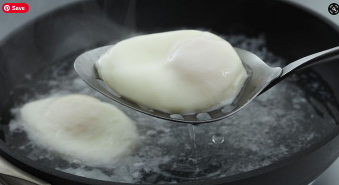

Poached Eggs

Description
Poached eggs is a dish made with eggs and very hot water. Eggs have a deceptively hard and chalky exterior, but for the diligent cook there awaits
a sloppy surprise if they are able to break through the unappetising outer layer. The techniques involved in this dish include:
- breaking through the outer barrier of the egg
- boiling water
Ingredients
Method
- crack the shell of the egg over a pot of simmering water
- See the recipe for boiled eggs